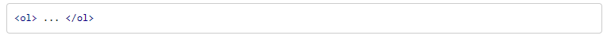
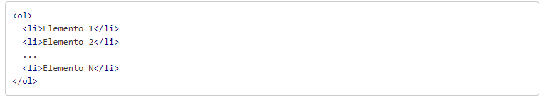
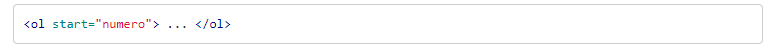
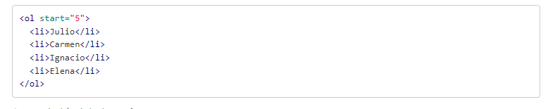
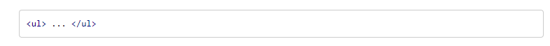
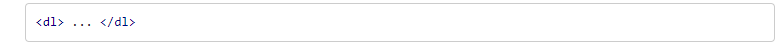
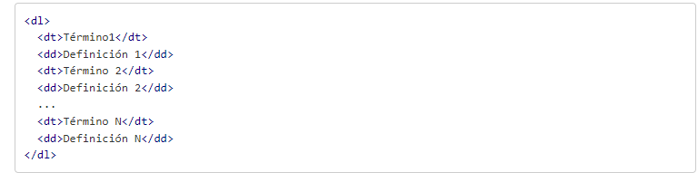

Las listas nos permite crear un conjunto de elementos de forma de lista en una pagina, el cual tiene como un orden un guion o numero.
Las listas tiene diferentes tipo en HTML entre los cuales tenemos los siguientes.
- Listas ordenadas
- Listas desordenadas
- Listas de definiciones
Listas ordenadas
Son aquellas que muestran los elementos de la lista en orden. Se representan en forma de elementos enumerados, cuando los elemetos de cada uno ira por medio de un numero o letra el cual se establecera un orden.
Las listas ordenas se representan por medio de la etiqueta ol.
cada uno de los elementos de la lista se representara por medio de li.
Inicio de lista start
Este atributo permite en dodne se quiere emepezar la lista, ya que en HTML por defecto inicia con el numero 1.
De tal forma, que si quiere que la lista se empieze con el numero 5, se hara de la suguinte forma:
Listas desordenadas
Sirven para mostrar las listas sin ningun tipo de orden, se hace por medio de una viñeta que puede ser punto o un cuadarado.
Para definir se utiliza el elemento ul.
Para representar la lista desordenada se utiliza el mismo elemento li

Listas de definiciones
Nos sirven para montar listas en la que tenemos la estructura con un valor y una definicion. Suelen ser listas para defirnir terminos, como si fuese un diccionario, si bien pueden ser cualaquier valor o definicion.
Esta lista se construye mediante elemnto dl
En las listas de difiniciones si tienen dos elementos anidados, que se representa al valor dt y el que representa la definicion dd.
Tomado de. Manual web.https://www.manualweb.net/html/listas-html/